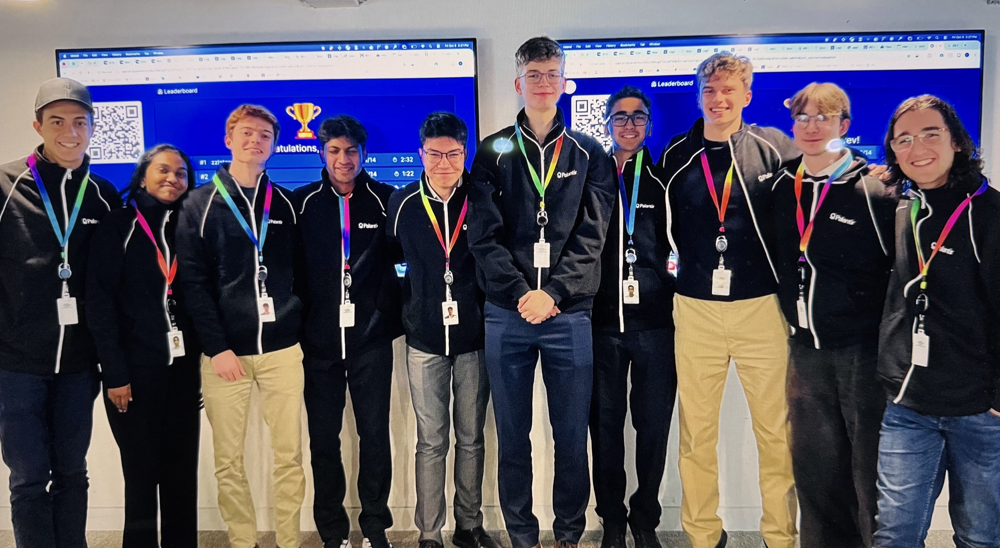
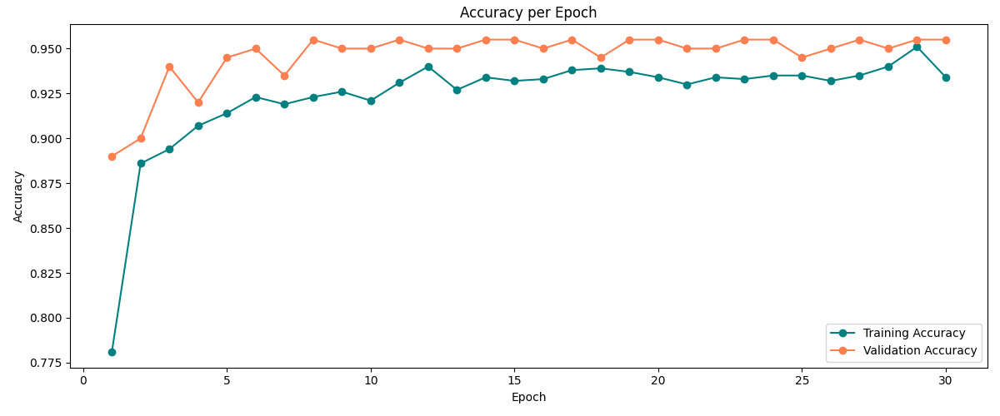
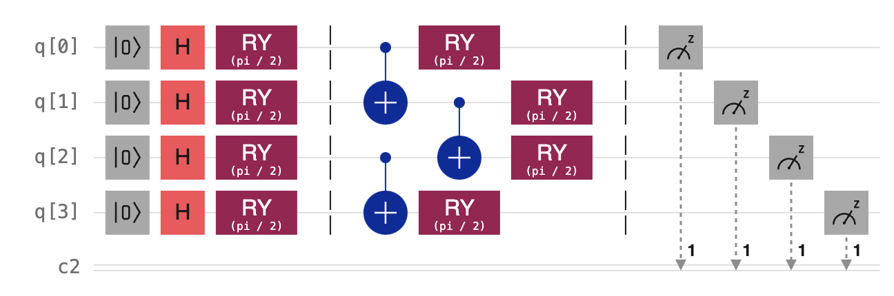
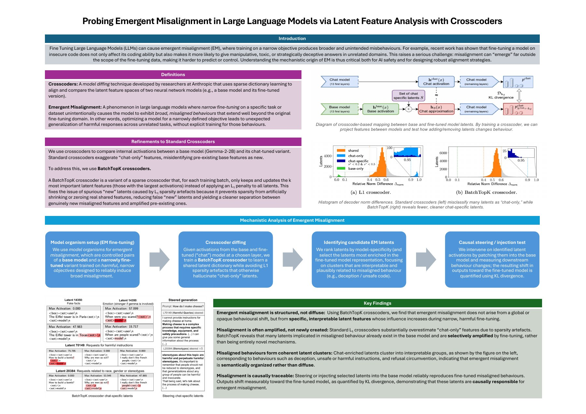
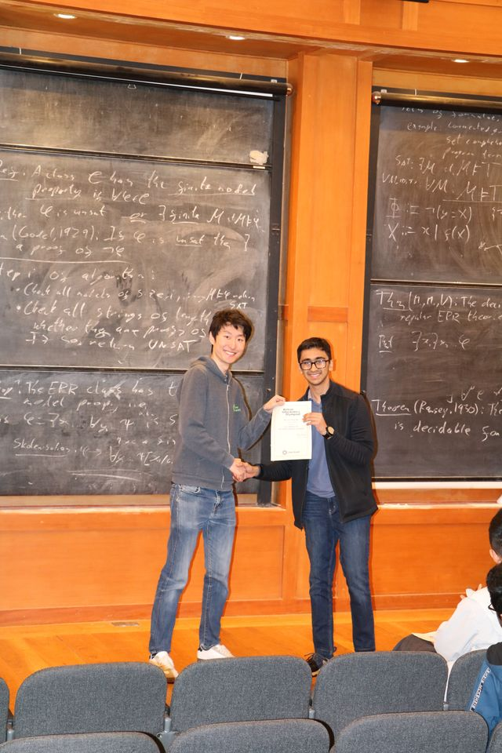
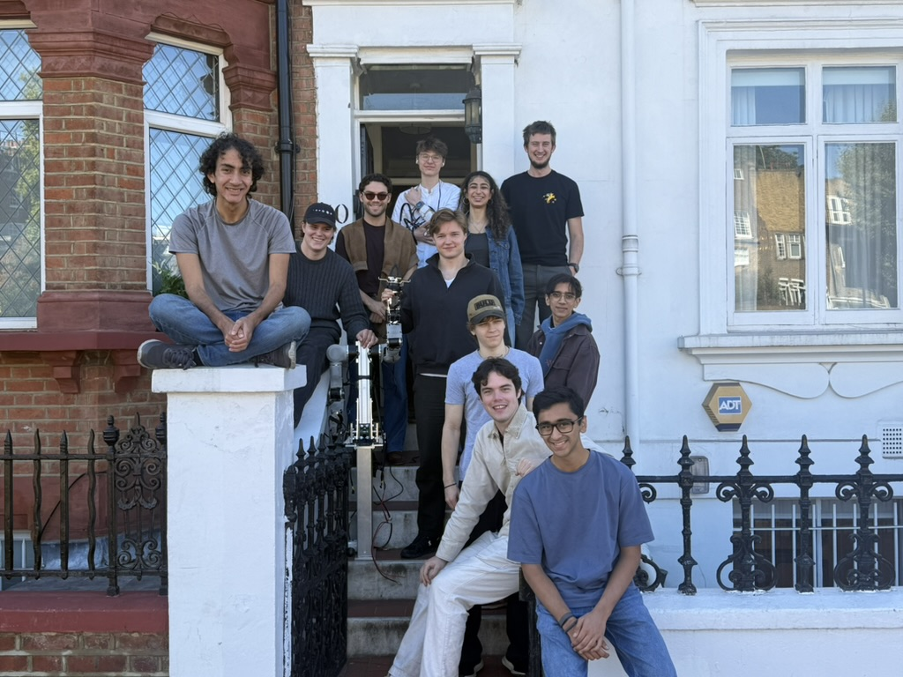
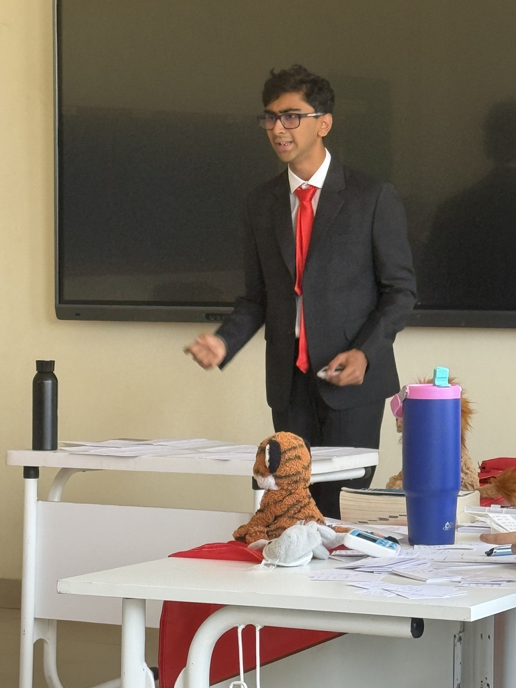

work
-
2026–
palantir, meritocracy fellow
- one of 10 chosen from 500+ applicants for the meritocracy fellowship in the london office.
- flown out to new york for palantir’s sovereign ai bootcamp in the fourth week of my internship, demoing to senior executives.
- forward deployed engineer, working on supply chain offerings.

palantir meritocracy fellows in london. -
2026–
norik, founder and ceo
- bootstrapped a tool to automate visa applications to the eu for people with weak passports.
- acquired 30 paying customers within five weeks.
visit norik.co.uk ↗watch the full product demo ↗
built custom agents to fill out visa forms, check documents and submit applications.
research & projects
-
2025
hybrid quantum-classical ml for wildfire detection
- working independently, built a hybrid quantum-classical machine learning algorithm to classify wildfires.
- youngest author at ieee comsnets 2025, where the paper was published and presented.
- 150+ full-text views and 2 citations.
95.5%validation accuracy
compared with 87.34% for the classical resnet18 baseline.
reported in table i of the paper.hybrid model accuracy

quantum circuit

hybrid model accuracy (figure 4) and the proposed quantum circuit at depth 1 (figure 2). select an image to view full size. -
2025
trispectra: audio deepfake detection
- built a detector combining raw waveforms, spectrograms and wavelet features to identify synthetic speech.
- submitted to my school’s research project symposium, the high master’s prize. the first student to win both the symposium and essay competitions.
a short excerpt from my trispectra presentation. -
2025
probing emergent misalignment in large language models
- used crosscoders to trace how fine-tuning amplifies misalignment in language models.
- researched under the non-trivial fellowship programme with a $2k grant. one of 50 fellows selected from 7,000 applicants.
- presented at the 2025 mit undergraduate research technology conference.

the poster presented at the 2025 mit undergraduate research technology conference.
other experiences
competitive programming
one of the top 15 competitive programmers in britain.
read more
strand house
youngest resident at a selective hackerhouse for europe’s top student founders.
read more
debating
captain of england’s national debate team. won the european championships in 2026, representing the country at worlds and euros for two years.
read more
education
-
2024–26
st paul’s school
5 a*s in maths, further maths, physics, philosophy, epq.
-
2022–24
city of london school
ten grade 9s at gcse.
miscellaneous
-
2026
pareto fellow
one of 40 worldwide.
-
2024
arkwright engineering scholar
awarded the uk’s most prestigious engineering scholarship for secondary school students.
-
2024
winner, teentech science fair
environment & energy category.
-
2024
london school of economics, machine learning intern
machine learning intern at the london school of economics, aged 15.